앱 안에서 사용하는 관리자 화면
내 정보 → 관리자 페이지 → 수집 관리. 앱의 기존 관리자 로그인으로 이용합니다.
메뉴 변경 전후
변경 전 · 내 정보기존 SAMPLE 메뉴: 외부 브라우저·별도 웹 로그인 변경 후 · 내 정보SAMPLE 메뉴: 앱 내부 수집 관리로 이동
변경 후 · 내 정보SAMPLE 메뉴: 앱 내부 수집 관리로 이동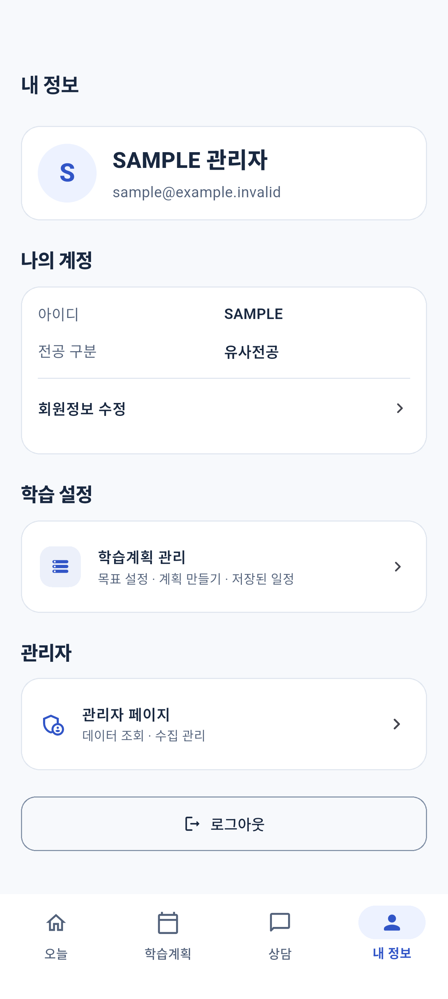
앱 내부 화면
이미지를 누르면 원본을 볼 수 있습니다. SAMPLE 응답 화면과 실제 API의 격리 검증 화면을 구분했습니다. 사용자의 실제 계정·기존 DB 화면은 포함하지 않았습니다.
수집 관리 홈SAMPLE · MockClient 응답으로 실행한 Android 화면후기 수집 설정SAMPLE · MockClient 응답으로 실행한 Android 화면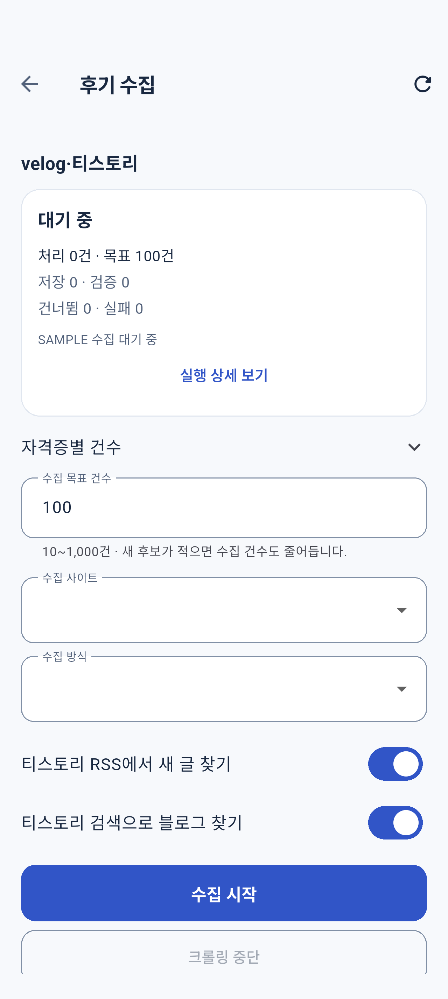
수집 요청 후 상태SAMPLE · MockClient 응답으로 실행한 Android 화면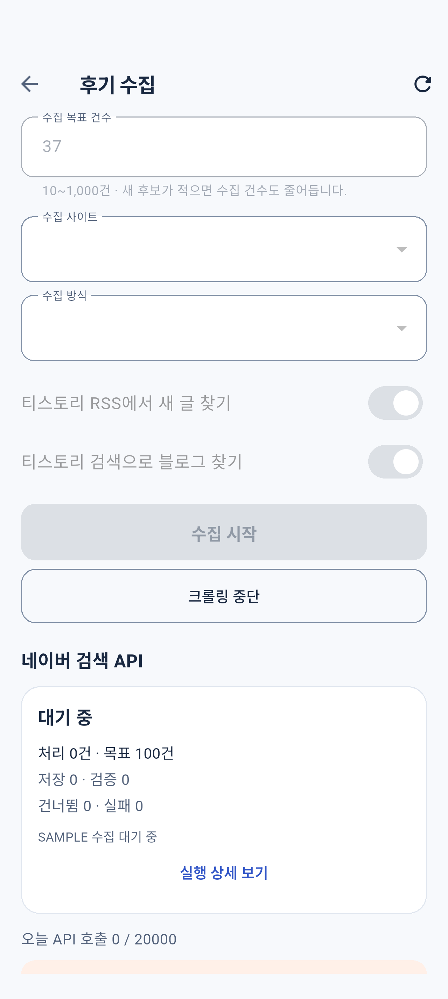
후기 목록·페이지SAMPLE · MockClient 응답으로 실행한 Android 화면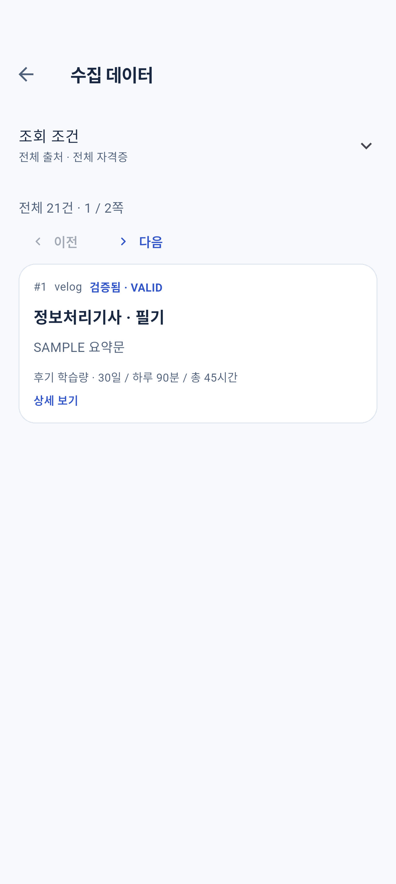
후기 상세SAMPLE · MockClient 응답으로 실행한 Android 화면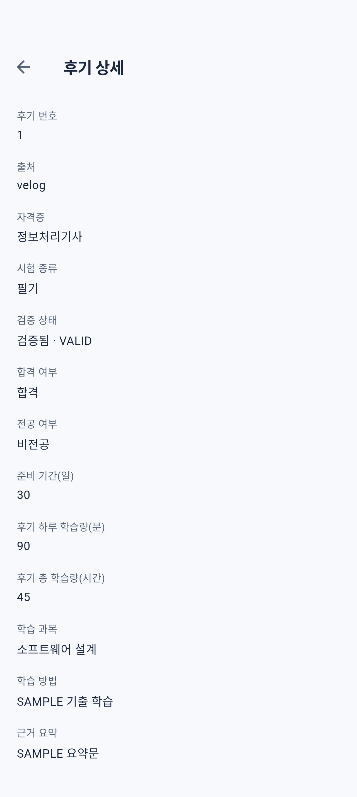
출처 관리SAMPLE · MockClient 응답으로 실행한 Android 화면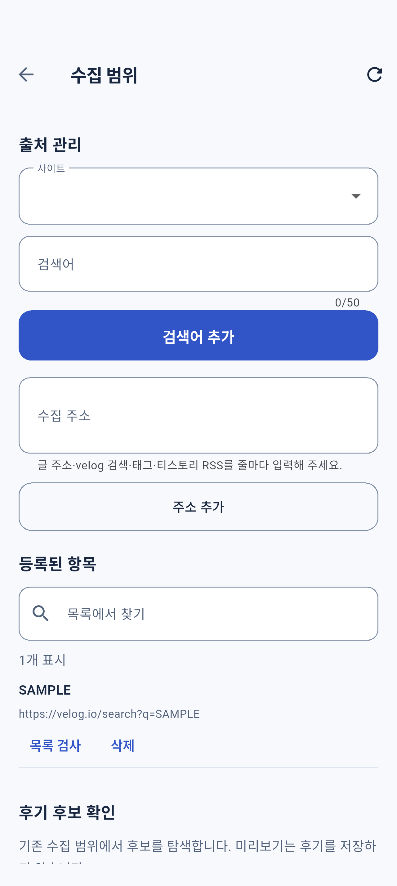
시험일정·재집계SAMPLE · MockClient 응답으로 실행한 Android 화면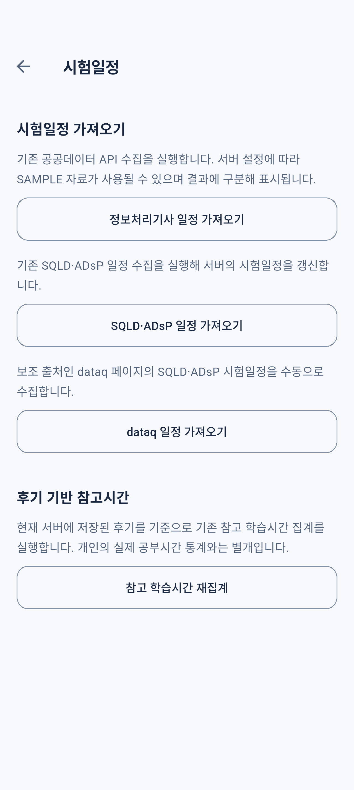
초기화 확인·취소SAMPLE · MockClient 응답으로 실행한 Android 화면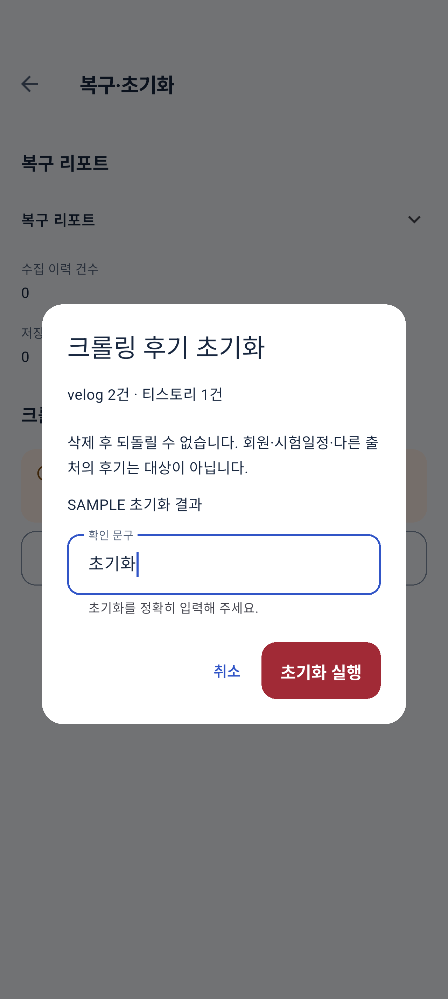
연결 실패·재시도SAMPLE · MockClient 응답으로 실행한 Android 화면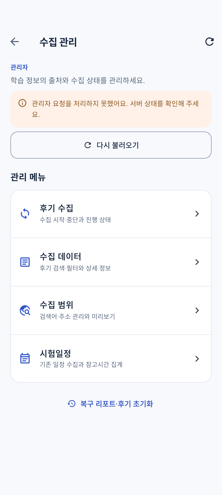
실제 API · 격리 환경의 관리 홈별도 DB·기존 Java/Spring Boot API · 합성 SAMPLE 표본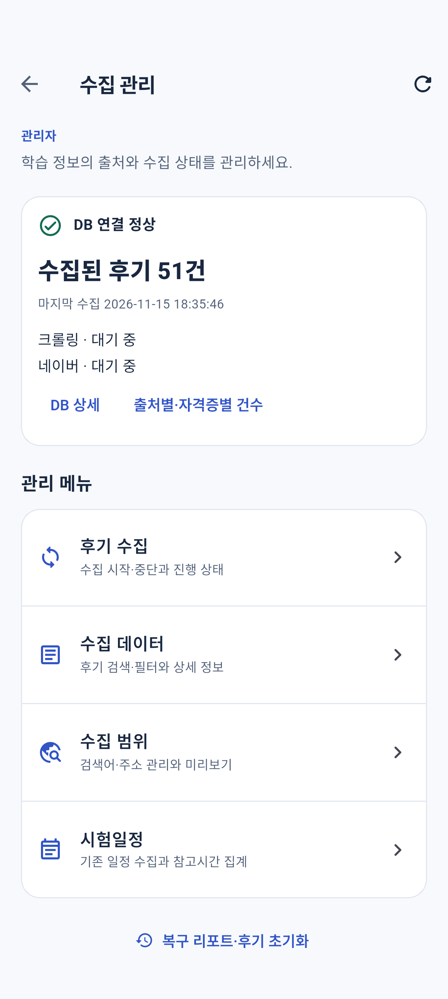
실제 API · 합성 후기 조회별도 DB·기존 Java/Spring Boot API · 합성 SAMPLE 표본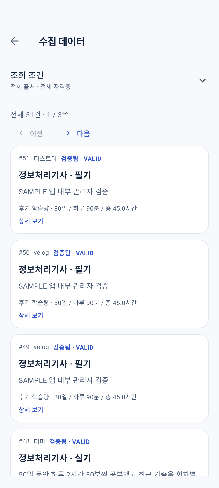